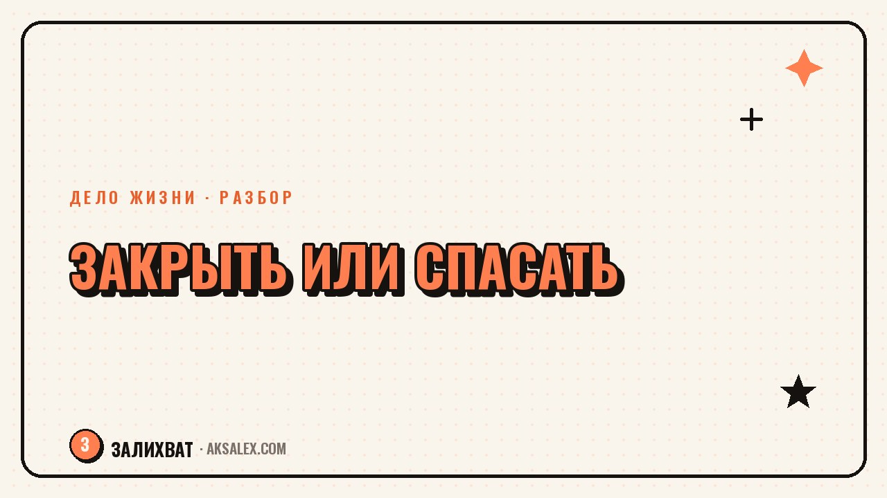

Как понять, что дело пора закрыть, а не спасать

В историях про упорство всегда звучит одно и то же: не бросай, терпи, прорвёшься. Но у упорства есть и тёмная сторона - иногда оно превращается в способ не замечать, что дело давно не работает так, как должно. Вопрос «закрыть или спасать» не имеет универсального ответа, но есть признаки и вопросы, которые помогают увидеть ситуацию честно, без лишнего драматизма и без слепого героизма.
Почему так трудно признать, что дело не идёт
Дело, в которое вложено время, деньги и часть личности, трудно оценивать объективно. Чем больше вложено, тем сильнее работает психологическая ловушка: кажется, что бросить сейчас - значит обнулить все прошлые усилия. Это называют эффектом невозвратных затрат, и он одинаково действует на тех, кто вложил три месяца, и на тех, кто вложил три года.
Добавляется и внешнее давление: страх разочаровать тех, кто верил в идею, стыд перед теми, кто предупреждал, что «не выгорит». Решение закрыть дело часто откладывается не потому, что ещё есть реальные шансы, а потому, что признание неудачи само по себе пугает.
Частые причины держаться за дело дольше, чем стоит
- Жалко уже потраченных денег и времени
- Страх, что окружающие скажут «я же говорил»
- Идея давно стала частью личности, и расстаться с ней болезненно
- Нет чёткого плана, что делать дальше, если закрыть дело
- Надежда, что следующий месяц или следующий клиент всё изменит
Признаки, что дело реально не работает
Один плохой месяц ничего не доказывает - сезонность, форс-мажор и рыночные циклы случаются у всех. Тревожный сигнал - это устойчивая тенденция: спад тянется не один квартал, а год и больше, и за это время не появилось ни одной рабочей гипотезы, которая бы хоть немного сдвинула ситуацию. Если ты пробовала менять цену, аудиторию, формат и подачу, а результат остаётся тот же - это уже не временная яма.
Второй признак - цена поддержания дела выше, чем цена его закрытия. Это не только деньги, но и здоровье, отношения, время с детьми. Если дело держится за счёт систематической жертвы сном или близкими людьми, а отдачи всё равно нет, баланс давно нарушен.
Я держала студию керамики два с половиной года, веря, что ещё один сезон всё изменит. Когда честно посчитала - доход за год еле покрывал аренду, а я работала без выходных и перестала спать нормально - поняла, что спасаю не дело, а свою гордость. Закрыла студию и впервые за два года выспалась.
Закрыть, изменить или сделать паузу: три разных решения
«Закрыть дело» звучит окончательно, но на деле у тебя есть три разных варианта, и важно не путать их между собой. Полное закрытие подходит, если идея устарела, рынок изменился или ты сама перегорела настолько, что даже успех не радует. Изменение формата подходит, если проблема не в самой идее, а в том, как она реализована - неправильная аудитория, неверная цена, неподходящий канал продаж.
Пауза - третий и часто недооценённый вариант. Иногда дело не нужно ни закрывать, ни спасать героическими усилиями прямо сейчас: достаточно остановить траты сил и денег, сохранить сделанное и вернуться к решению через несколько месяцев со свежей головой.
| Вариант | Когда подходит |
|---|---|
| Полное закрытие | Идея устарела или рынок изменился |
| Смена формата | Идея рабочая, реализация неверная |
| Пауза | Решение принимается на усталости |
| Передача другому | Дело живое, но не твоё по силам |
Как проверить себя перед финальным решением
Полезно разделить решение на две части: факты и чувства. Факты - это цифры, сроки, объективные показатели: сколько месяцев подряд падает доход, сколько осталось денег на развитие, сколько клиентов приходит повторно. Чувства - это усталость, стыд, страх осуждения, которые искажают картину в любую сторону, иногда заставляя держаться за провальную идею, а иногда наоборот - бросать то, что ещё можно было спасти.
Хороший приём - написать решение так, будто советуешь не себе, а подруге с точно такой же ситуацией. Со стороны почти всегда виднее, где реальная перспектива, а где уже упорство ради упорства. Ещё полезно обозначить себе конкретный срок и показатель: если через три месяца доход не вырастет хотя бы на определённую величину, решение принимается без новых отговорок.
Вопросы для честной проверки
- Если бы я начинала сейчас с нулевым опытом, выбрала бы я это дело снова
- Что конкретно изменилось бы, если я дам себе ещё три месяца
- Чего я боюсь больше - закрыть дело или признать, что оно не работает
- Что я получу взамен, если освобожу время и силы от этого дела
Жизнь после закрытия дела - это не конец истории
Закрытие дела часто ощущается как публичное признание неудачи, но на практике это обычный этап пути, через который проходит большинство людей, которые пробуют что-то своё. Опыт, навыки и связи, собранные за время работы, никуда не исчезают вместе с закрытой вывеской - они переходят в следующий проект, следующую профессию, следующую попытку.
Многие люди, которые сейчас уверенно ведут успешное дело, за плечами имеют хотя бы одну закрытую попытку. Разница между ними и теми, кто застрял, часто не в таланте и не в везении, а в готовности вовремя признать, что конкретная идея исчерпала себя, и перейти к следующей, не считая это провалом всей жизни.
Частые вопросы
Как понять, что дело пора закрывать, а не продолжать терпеть
Главный признак - устойчивый спад на протяжении года и больше, при котором разные попытки изменить цену, формат или аудиторию не дают результата. Второй признак - цена поддержания дела (здоровье, отношения, деньги) выше, чем цена его закрытия.
Чем отличается пауза в деле от его закрытия
Пауза - это временная остановка активных трат сил и денег с сохранением наработок и возвратом к решению позже, обычно через несколько месяцев. Закрытие - окончательное решение, которое уместно, если идея устарела или ты сама перегорела полностью.
Как не спутать усталость с реальным сигналом закрыть дело
Стоит разделить факты и чувства: отдельно посмотреть на цифры и сроки, отдельно - на свою усталость и страх осуждения. Решение лучше принимать не в момент острого истощения, а после паузы и отдыха, когда картина яснее.
Что делать с опытом, если дело всё-таки пришлось закрыть
Опыт, навыки и связи не исчезают вместе с закрытым делом - они переходят в следующий проект или профессию. Большинство людей с устойчивым успешным делом имеют за плечами хотя бы одну закрытую попытку в прошлом.
Как решить между закрытием дела и изменением формата
Если причина неудачи в самой идее или устаревшем рынке - подходит закрытие. Если идея рабочая, но реализация неверная - неправильная аудитория, цена или канал продаж - для начала стоит попробовать сменить формат, а не закрывать дело целиком.
Раз тема оказалась полезной, вот что почитать следующим. Своё дело без публичности: форматы, которые работают, если ты не хочешь быть на виду.
Читать статью →а не вручную